Your project.
Not your whole computer.
Let your coding agent build, test, and explore in a sandbox on your computer—with common secret files hidden by default.
src/Your codetests/Your checks.envApp secretsserver.pemPrivate keydeploy/prod.yaml.coopignoresrc/Read + writetests/Read + write.envContents hiddenserver.pemContents hiddendeploy/prod.yaml.coopignore ruleContents hidden$ cat .envEmpty file. Secret contents are hidden..coopignore adds your own exclusions. Illustration, not a live security test.Same tools.
A better place to run them.
$ coop claudeIn your project. Inside the sandbox.Use a supported provider account. Keep working in your terminal, or connect through Zed.
Some files are
none of its business.
Your agent needs the code to fix a bug. It doesn’t need your production environment file or private keys.
co:op covers known sensitive files with empty, read-only files. Add your own exclusions in .coopignore. Config templates can stay readable, so the agent still knows how your app fits together.
# Keep these paths privatedeploy/prod.yamlcustomer-data/internal-notes.md# One pattern per line.One agent today.
A whole workflow tomorrow.
The sandbox is the starting point. Add structure when the work needs it.
Keep a task list.
Save requirements, progress, and decisions between runs. Pick up unfinished work without starting the conversation over.
coop tasksBring in another agent.
Choose who leads, who implements, and who gives a second opinion. Save the arrangement as a reusable preset.
coop presetsGive the work its own copy.
Use an optional fork when you want changes kept separate. Inspect the diff before bringing them into your branch.
coop forkYour next session.
With a boundary.
Install co:op, connect your agent, and open a project.
Start with the setup guideMIT licensed · Provider usage billed separately
Connect your agent
coop login claudeOpen your project
cd your-projectCheck the sandbox. Start working.
coop doctor
coop claudeBefore you
let it loose.
Does this replace my coding agent?
No. co:op runs supported coding agents in a sandbox and adds file protection, task management, and coordination around them. You still use a provider account.
Are all my secrets automatically hidden?
No. co:op hides known sensitive filenames and paths you add to .coopignore. It does not recognize every secret inside arbitrary files or Git history. The selected agent may need its own provider credentials inside the sandbox.
Can the agent change my actual files?
Yes. Normal runs edit your project’s working files, while protected file contents are hidden. Use an optional fork if you want the agent’s changes kept in a separate copy until you review and merge them.
Is every sandbox a virtual machine?
It depends on the runtime. Apple’s container runtime uses a lightweight VM per container. Standard Docker and Podman use container isolation; Docker Desktop’s shared VM is not a separate VM per sandbox. Supported controls differ by runtime.
Does everything stay on my computer?
The sandbox runs on your machine, but your agent still communicates with its model provider. Running locally does not mean local inference or that project data never leaves your computer.
A little more room to grow.
co:op You are here
A sandbox and workflow for coding agents on your computer.

Emisar
Controlled access to infrastructure and third-party tools.
Ryker
Your AI teammate in Slack and GitHub, built on top.